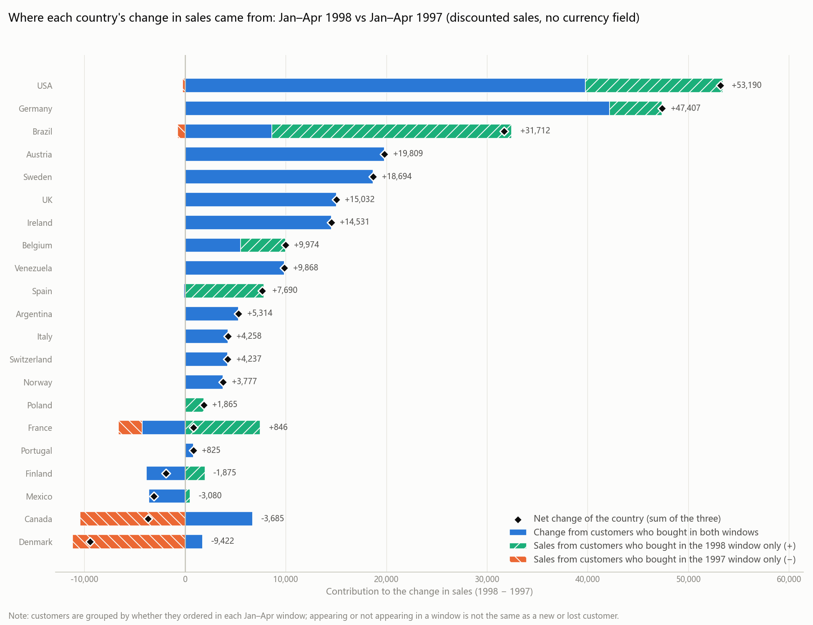
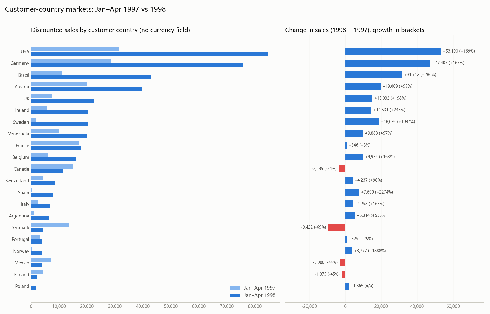

Q1 · Where did each market's sales change come from?
Short answer
Company sales in January–April rose by +230,968 (+120.7%). Exactly: +189,151 is the net change from the 59 customers who bought in both windows, +66,804 from 21 customers who bought only in the 1998 window, and -24,987 from 6 customers who bought only in the 1997 window.
Window presence alone does not identify acquisition or loss; out-of-window orders show that these are window-based buying groups: 20 of the 21 1998-window-only customers had ordered before, outside the windows, and all 6 1997-window-only customers ordered again after April 1997. Next step: work with account managers on the largest both-window customers (what drove their increase, and is it repeatable), review the few 1997-window-only accounts behind the Canada and Denmark declines, and find out why the 1998-window-only customers ordered in this window and whether their orders continue.
Why it matters
Change among customers who bought in both windows points to account development; customers missing from the later window point to account review; customers present only in the later window point to follow-up. Knowing which group moved each market tells the sales team what kind of action to consider, not just where — the groups describe buying in two windows, not the reasons behind it.
Method
Data and period: January–April 1997 vs January–April 1998 by order date. Comparing the same months reduces differences caused by seasonality (the data stops in early May 1998), but does not remove them entirely.
Grain and joins: order lines (Orders Details) are joined to Orders by OrderID and to Customers by CustomerID; discounted sales = UnitPrice × Quantity × (1 − Discount), summed per customer and window. The market is Customers.Country.
Customer groups (by whether a customer has any order in each window): bought in both windows; bought in the 1998 window only; bought in the 1997 window only. Every country's change then splits exactly into:
Change = (both-window sales 1998 − both-window sales 1997) + sales 1998 of 1998-window-only customers − sales 1997 of 1997-window-only customersFormulas, definitions and analysis choices
Growth = (S1998 − S1997) / S1997 (not applicable when S1997 = 0) AOV = Sales / unique OrderID ln(S1/S0) = ln(O1/O0) + ln(AOV1/AOV0) where O = ordersWindows: OrderDate 1997-01-01 to 1997-04-30 and 1998-01-01 to 1998-04-30. Context columns: orders placed outside both windows (before 1998 for 1998-window-only customers; after April 1997 for 1997-window-only customers). They describe purchase timing and do not turn the groups into new or lost customers. Flags: low base = 1997 sales below 2% of the 1997 total; ≤2 customers in either window; one customer above 50% of a window's sales. Checks: the three groups are mutually exclusive, cover every customer active in either window, and their contributions add up to each country's and the company's change.
44 reconciliation checks, all passed (q1_validation.csv).
Evidence

The three contributions by country (amount, with customers in brackets)
| Country | Net change | Bought in both windows: change (customers) | 1998 window only: + sales (customers) | 1997 window only: − sales (customers) |
|---|---|---|---|---|
| USA | +53,190 | +39,776 (5) | +13,663 (6) | -249 (2) |
| Germany | +47,407 | +42,189 (8) | +5,218 (3) | — |
| Brazil | +31,712 | +8,640 (7) | +23,821 (1) | -750 (1) |
| Austria | +19,809 | +19,809 (2) | — | — |
| Sweden | +18,694 | +18,694 (2) | — | — |
| UK | +15,032 | +15,032 (7) | — | — |
| Ireland | +14,531 | +14,531 (1) | — | — |
| Belgium | +9,974 | +5,535 (1) | +4,439 (1) | — |
| Venezuela | +9,868 | +9,868 (3) | — | — |
| Spain | +7,690 | -131 (1) | +7,821 (3) | — |
| Argentina | +5,314 | +5,314 (3) | — | — |
| Italy | +4,258 | +4,258 (3) | — | — |
| Switzerland | +4,237 | +4,237 (2) | — | — |
| Norway | +3,777 | +3,777 (1) | — | — |
| Poland | +1,865 | — | +1,865 (1) | — |
| France | +846 | -4,251 (4) | +7,475 (4) | -2,378 (1) |
| Portugal | +825 | +825 (2) | — | — |
| Finland | -1,875 | -3,862 (1) | +1,987 (1) | — |
| Mexico | -3,080 | -3,594 (3) | +514 (1) | — |
| Canada | -3,685 | +6,735 (2) | — | -10,420 (1) |
| Denmark | -9,422 | +1,766 (1) | — | -11,188 (1) |
| Total | +230,968 | +189,151 (59) | +66,804 (21) | -24,987 (6) |
Net change = both-window change + 1998-window-only sales − 1997-window-only sales, exactly, for every country and for the company.
Findings
- Customers who bought in both windows drove most of the growth: +189,151 of the +230,968 company increase (59 of 86 customers active in either window).
- USA (+53,190) and Germany (+47,407) grew mainly through both-window customers buying more (+39,776 from 5 customers in the USA, +42,189 from 8 in Germany). The USA also added +13,663 from 6 1998-window-only customers. Germany's increase is concentrated: QUICK and KOENE explain 80% of it.
- Brazil (+31,712) depends on one 1998-window-only customer: HANAR added +23,821, more than the +8,640 from its 7 both-window customers.
- France grew +5.0% (+846): its 4 both-window customers bought less (-4,251), offset by 4 1998-window-only customers (+7,475), with one 1997-window-only customer (-2,378).
- Canada (-3,685) and Denmark (-9,422) declined mainly through one 1997-window-only customer each (MEREP -10,420, SIMOB -11,188) outweighed growth from both-window customers. SIMOB ordered again on 1998-05-06, just after the window; MEREP placed no order between 1997-10-30 and the end of the data.
- Finland (-1,875) and Mexico (-3,080) declined through both-window customers buying less. In Finland that is WARTH (-3,862). In Mexico 3 of its 4 customers bought less, and the largest single drop (TORTU, -2,636) is 86% of the net decline — both are true at once.
- Countries flagged as low base (Argentina, Italy, Norway, Portugal, Spain, Sweden) can show extreme growth rates; Spain's increase, for example, comes from 3 1998-window-only customers. Poland had no sales in the 1997 window, so its growth rate is not applicable.
Business interpretation and next steps
- Both-window customers (main source of growth): ask account managers what drove the largest increases (for example SAVEA and WHITC in the USA, QUICK and KOENE in Germany) and whether it can repeat. In Germany, weigh the dependence on two accounts before adding effort.
- 1997-window-only customers: review these accounts one by one; MEREP (Canada) is the case with no orders from late October 1997 to the end of the data. The others did order again after April 1997; check what their absence from the 1998 window reflects before treating it as a loss.
- 1998-window-only customers: almost all had bought before; find out why they ordered in this window (for example HANAR in Brazil) and whether orders continue. This is not evidence that an acquisition effort worked.
- France needs an account-level look at why its both-window customers bought less while others returned. Small markets with extreme growth rates should be watched, not prioritised, on this evidence alone.
These are candidate directions for further evaluation, not decisions the data can settle on its own.
Limitations and boundaries
- Window presence is not first purchase, retention or churn: a customer can be absent from a four-month window and still be active; no retention or repurchase rate is computed.
- The split is descriptive arithmetic; it does not explain why customers bought more or less.
- Price level differs: most 1997-window order lines were priced at about 0.8× the 1998 level (see Q4), so part of every group's change reflects that difference.
- Small samples and concentration: many countries have one to three customers or fewer than 15 orders, so one order or one account can swing the result.
- Country = the customer's master-data country, not the ship-to country. Orders not yet shipped at the data cut-off are included. Sales are not profit.
Supplementary material and downloads
Supplementary charts and tables

Country size and growth (background)
| Country | Sales 1997 | Sales 1998 | Change | Growth | Orders | Customers | AOV | Share Δ (pp) | Flags |
|---|---|---|---|---|---|---|---|---|---|
| USA | 31,517.75 | 84,707.80 | +53,190.05 | +168.8% | 12 → 35 | 7 → 11 | 2,626 → 2,420 | +3.6 | |
| Germany | 28,433.64 | 75,840.50 | +47,406.86 | +166.7% | 17 → 32 | 8 → 11 | 1,673 → 2,370 | +3.1 | one customer >50% of a window's sales |
| Brazil | 11,097.12 | 42,808.69 | +31,711.57 | +285.8% | 12 → 27 | 8 → 8 | 925 → 1,586 | +4.3 | one customer >50% of a window's sales |
| Austria | 19,973.36 | 39,782.65 | +19,809.28 | +99.2% | 7 → 10 | 2 → 2 | 2,853 → 3,978 | -1.0 | ≤2 customers in a window; one customer >50% of a window's sales |
| UK | 7,591.70 | 22,623.53 | +15,031.83 | +198.0% | 9 → 16 | 7 → 7 | 844 → 1,414 | +1.4 | |
| Ireland | 5,870.92 | 20,402.12 | +14,531.19 | +247.5% | 3 → 4 | 1 → 1 | 1,957 → 5,101 | +1.8 | ≤2 customers in a window; one customer >50% of a window's sales |
| Sweden | 1,703.82 | 20,398.23 | +18,694.41 | +1097.2% | 4 → 14 | 2 → 2 | 426 → 1,457 | +3.9 | low base (<2% of 1997 total); ≤2 customers in a window; one customer >50% of a window's sales |
| Venezuela | 10,125.38 | 19,993.69 | +9,868.31 | +97.5% | 8 → 16 | 3 → 3 | 1,266 → 1,250 | -0.6 | one customer >50% of a window's sales |
| France | 17,083.50 | 17,929.43 | +845.93 | +5.0% | 14 → 22 | 5 → 8 | 1,220 → 815 | -4.7 | |
| Belgium | 6,109.48 | 16,083.67 | +9,974.19 | +163.3% | 3 → 10 | 1 → 2 | 2,036 → 1,608 | +0.6 | ≤2 customers in a window; one customer >50% of a window's sales |
| Canada | 15,210.71 | 11,525.55 | -3,685.16 | -24.2% | 8 → 9 | 3 → 2 | 1,901 → 1,281 | -5.2 | ≤2 customers in a window; one customer >50% of a window's sales |
| Switzerland | 4,411.80 | 8,649.01 | +4,237.21 | +96.0% | 2 → 6 | 2 → 2 | 2,206 → 1,442 | -0.3 | ≤2 customers in a window; one customer >50% of a window's sales |
| Spain | 338.20 | 8,028.60 | +7,690.40 | +2273.9% | 1 → 12 | 1 → 4 | 338 → 669 | +1.7 | low base (<2% of 1997 total); ≤2 customers in a window; one customer >50% of a window's sales |
| Italy | 2,585.69 | 6,843.80 | +4,258.11 | +164.7% | 5 → 10 | 3 → 3 | 517 → 684 | +0.3 | low base (<2% of 1997 total); one customer >50% of a window's sales |
| Argentina | 988.10 | 6,302.50 | +5,314.40 | +537.8% | 3 → 10 | 3 → 3 | 329 → 630 | +1.0 | low base (<2% of 1997 total) |
| Denmark | 13,706.40 | 4,284.00 | -9,422.40 | -68.7% | 2 → 3 | 2 → 1 | 6,853 → 1,428 | -6.1 | ≤2 customers in a window; one customer >50% of a window's sales |
| Portugal | 3,277.98 | 4,102.70 | +824.71 | +25.2% | 4 → 3 | 2 → 2 | 819 → 1,368 | -0.7 | low base (<2% of 1997 total); ≤2 customers in a window; one customer >50% of a window's sales |
| Norway | 200.00 | 3,976.75 | +3,776.75 | +1888.4% | 1 → 3 | 1 → 1 | 200 → 1,326 | +0.8 | low base (<2% of 1997 total); ≤2 customers in a window; one customer >50% of a window's sales |
| Mexico | 6,964.51 | 3,884.90 | -3,079.61 | -44.2% | 4 → 5 | 3 → 4 | 1,741 → 777 | -2.7 | one customer >50% of a window's sales |
| Finland | 4,131.80 | 2,257.00 | -1,874.80 | -45.4% | 4 → 5 | 1 → 2 | 1,033 → 451 | -1.6 | ≤2 customers in a window; one customer >50% of a window's sales |
| Poland | 0.00 | 1,865.10 | +1,865.10 | not applicable | 0 → 4 | 0 → 1 | n/a → 466 | +0.4 | no sales in 1997 window, sales in 1998 window; ≤2 customers in a window; one customer >50% of a window's sales |
| Total | 191,321.88 | 422,290.24 | +230,968.36 | +120.7% | 123 → 256 | 65 → 80 | 1,555 → 1,650 |
Share Δ = change in the country's share of company sales (internal share, not market share), in percentage points. AOV = average order value.
Concentration inside the largest markets
| Country | Largest customer 1997 | Largest customer 1998 | Top contributor to the increase | Its share of the net increase | Top two share |
|---|---|---|---|---|---|
| USA | RATTC 45.6% | SAVEA 37.8% | SAVEA +20,329.54 | 38.2% | 59.5% |
| Germany | QUICK 54.8% | QUICK 49.1% | QUICK +21,631.56 | 45.6% | 80.0% |
| Brazil | QUEEN 24.5% | HANAR 55.6% | HANAR +23,821.20 | 75.1% | 89.7% |
Customers behind selected countries
| Country | Customer | Group | Sales 1997 | Sales 1998 | Orders outside both windows |
|---|---|---|---|---|---|
| Brazil | COMMI | Both windows | 1,128.00 | 513.75 | — |
| Brazil | FAMIA | 1997 window only | 750.13 | 0.00 | 3 |
| Brazil | GOURL | Both windows | 1,020.00 | 405.35 | — |
| Brazil | HANAR | 1998 window only | 0.00 | 23,821.20 | 7 |
| Brazil | QUEDE | Both windows | 1,194.27 | 1,353.60 | — |
| Brazil | QUEEN | Both windows | 2,720.48 | 4,346.75 | — |
| Brazil | RICAR | Both windows | 2,386.40 | 6,998.52 | — |
| Brazil | TRADH | Both windows | 190.00 | 4,234.26 | — |
| Brazil | WELLI | Both windows | 1,707.84 | 1,135.25 | — |
| Canada | BOTTM | Both windows | 4,512.25 | 11,338.55 | — |
| Canada | LAUGB | Both windows | 278.00 | 187.00 | — |
| Canada | MEREP | 1997 window only | 10,420.46 | 0.00 | 7 |
| Denmark | SIMOB | 1997 window only | 11,188.40 | 0.00 | 5 |
| Denmark | VAFFE | Both windows | 2,518.00 | 4,284.00 | — |
| Finland | WARTH | Both windows | 4,131.80 | 270.00 | — |
| Finland | WILMK | 1998 window only | 0.00 | 1,987.00 | 4 |
| France | BLONP | Both windows | 3,832.72 | 730.00 | — |
| France | BONAP | Both windows | 4,370.80 | 5,887.86 | — |
| France | DUMON | 1998 window only | 0.00 | 860.10 | 3 |
| France | FOLIG | 1997 window only | 2,378.40 | 0.00 | 3 |
| France | FRANR | 1998 window only | 0.00 | 2,252.06 | 1 |
| France | LACOR | 1998 window only | 0.00 | 1,992.05 | 0 |
| France | LAMAI | Both windows | 3,946.06 | 1,259.91 | — |
| France | SPECD | 1998 window only | 0.00 | 2,371.00 | 1 |
| France | VICTE | Both windows | 2,555.52 | 2,576.45 | — |
| Mexico | ANATR | 1998 window only | 0.00 | 514.40 | 3 |
| Mexico | ANTON | Both windows | 749.06 | 660.00 | — |
| Mexico | PERIC | Both windows | 2,065.40 | 1,196.00 | — |
| Mexico | TORTU | Both windows | 4,150.05 | 1,514.50 | — |
Download the full result tables (CSV)
- q1_country_comparison.csv — Country table, rounded, Chinese headers
- q1_country_raw_precision.csv — Country table, full precision
- q1_customer_evidence.csv — Customer evidence for USA, Germany and declining countries
- q1_customer_group_bridge.csv — Change by country split into the three customer buying groups
- q1_customer_groups.csv — Every customer's window sales, orders, group and out-of-window orders
- q1_customer_sales_by_country.csv — Sales per customer per window
- q1_growth_decomposition.csv — Log split of growth into orders and AOV
- q1_validation.csv — Reconciliation checks (expected, actual, pass)
- spotcheck_Switzerland_customers.csv — Spot-check detail
- spotcheck_Switzerland_lines.csv — Spot-check detail
- spotcheck_Switzerland_orders.csv — Spot-check detail
CSV files are UTF-8 with BOM; some headers are in Chinese.